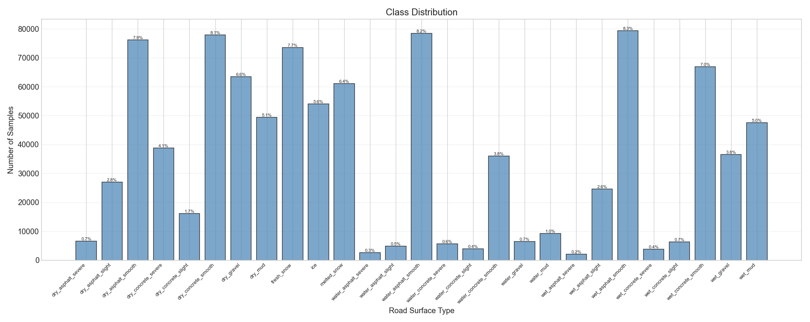
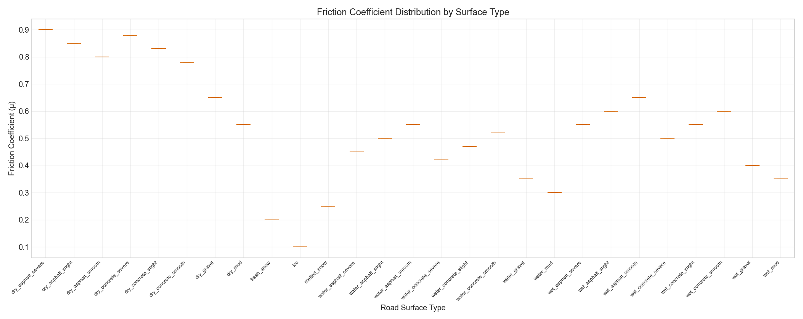
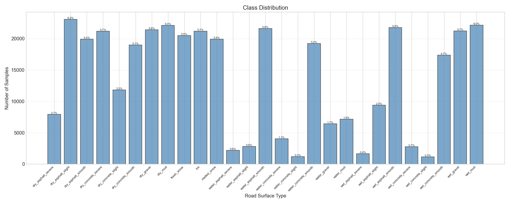
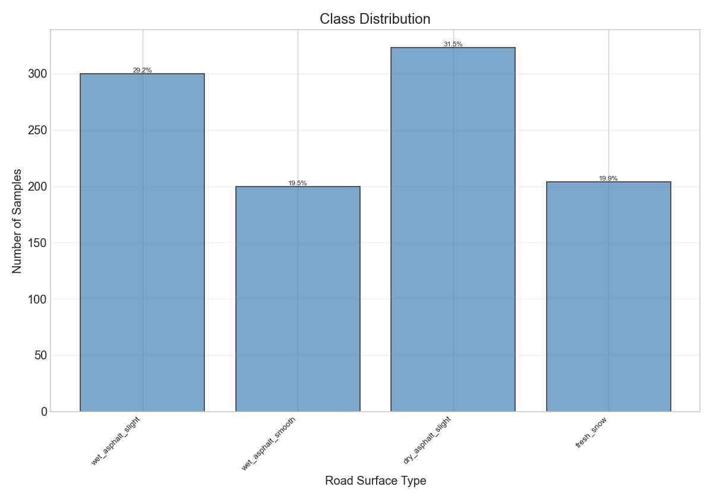
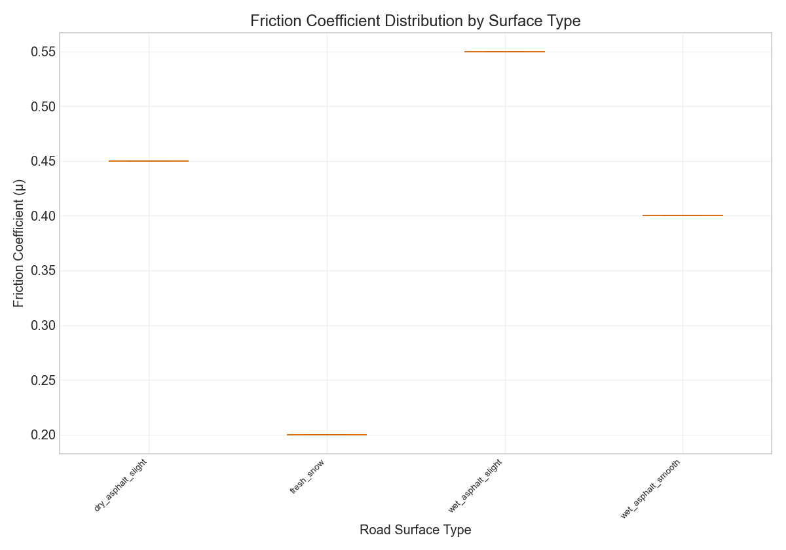

Generated on: 2026-07-30 18:08:01
Total Samples: 958941
| Class | Count | Percentage |
|---|---|---|
| dry_asphalt_severe | 6610 | 0.7% |
| dry_asphalt_slight | 27023 | 2.8% |
| dry_asphalt_smooth | 76231 | 7.9% |
| dry_concrete_severe | 38850 | 4.1% |
| dry_concrete_slight | 16092 | 1.7% |
| dry_concrete_smooth | 77938 | 8.1% |
| dry_gravel | 63417 | 6.6% |
| dry_mud | 49348 | 5.1% |
| fresh_snow | 73560 | 7.7% |
| ice | 54092 | 5.6% |
| melted_snow | 61093 | 6.4% |
| water_asphalt_severe | 2581 | 0.3% |
| water_asphalt_slight | 4913 | 0.5% |
| water_asphalt_smooth | 78390 | 8.2% |
| water_concrete_severe | 5702 | 0.6% |
| water_concrete_slight | 3924 | 0.4% |
| water_concrete_smooth | 36046 | 3.8% |
| water_gravel | 6422 | 0.7% |
| water_mud | 9279 | 1.0% |
| wet_asphalt_severe | 2161 | 0.2% |
| wet_asphalt_slight | 24680 | 2.6% |
| wet_asphalt_smooth | 79404 | 8.3% |
| wet_concrete_severe | 3854 | 0.4% |
| wet_concrete_slight | 6301 | 0.7% |
| wet_concrete_smooth | 66955 | 7.0% |
| wet_gravel | 36515 | 3.8% |
| wet_mud | 47560 | 5.0% |
| Class | Min | Max | Mean | Std |
|---|---|---|---|---|
| dry_asphalt_severe | 0.900 | 0.900 | 0.900 | 0.000 |
| dry_asphalt_slight | 0.850 | 0.850 | 0.850 | 0.000 |
| dry_asphalt_smooth | 0.800 | 0.800 | 0.800 | 0.000 |
| dry_concrete_severe | 0.880 | 0.880 | 0.880 | 0.000 |
| dry_concrete_slight | 0.830 | 0.830 | 0.830 | 0.000 |
| dry_concrete_smooth | 0.780 | 0.780 | 0.780 | 0.000 |
| dry_gravel | 0.650 | 0.650 | 0.650 | 0.000 |
| dry_mud | 0.550 | 0.550 | 0.550 | 0.000 |
| fresh_snow | 0.200 | 0.200 | 0.200 | 0.000 |
| ice | 0.100 | 0.100 | 0.100 | 0.000 |
| melted_snow | 0.250 | 0.250 | 0.250 | 0.000 |
| water_asphalt_severe | 0.450 | 0.450 | 0.450 | 0.000 |
| water_asphalt_slight | 0.500 | 0.500 | 0.500 | 0.000 |
| water_asphalt_smooth | 0.550 | 0.550 | 0.550 | 0.000 |
| water_concrete_severe | 0.420 | 0.420 | 0.420 | 0.000 |
| water_concrete_slight | 0.470 | 0.470 | 0.470 | 0.000 |
| water_concrete_smooth | 0.520 | 0.520 | 0.520 | 0.000 |
| water_gravel | 0.350 | 0.350 | 0.350 | 0.000 |
| water_mud | 0.300 | 0.300 | 0.300 | 0.000 |
| wet_asphalt_severe | 0.550 | 0.550 | 0.550 | 0.000 |
| wet_asphalt_slight | 0.600 | 0.600 | 0.600 | 0.000 |
| wet_asphalt_smooth | 0.650 | 0.650 | 0.650 | 0.000 |
| wet_concrete_severe | 0.500 | 0.500 | 0.500 | 0.000 |
| wet_concrete_slight | 0.550 | 0.550 | 0.550 | 0.000 |
| wet_concrete_smooth | 0.600 | 0.600 | 0.600 | 0.000 |
| wet_gravel | 0.400 | 0.400 | 0.400 | 0.000 |
| wet_mud | 0.350 | 0.350 | 0.350 | 0.000 |


Total CAN Messages: 0
Duration: 0.00 seconds
Sample Rate: 0.0 Hz
| Signal | Min | Max | Mean | Std | Missing |
|---|



Total Samples: 1027
| Weather | Count | Percentage |
|---|---|---|
| dry_asphalt_slight | 323 | 31.5% |
| fresh_snow | 204 | 19.9% |
| wet_asphalt_slight | 300 | 29.2% |
| wet_asphalt_smooth | 200 | 19.5% |


Total Samples: 0
Total Images: 0
[WARNING] Class 'dry_asphalt_severe' has only 0.7% of samples. Consider data augmentation.
[WARNING] Class 'dry_asphalt_slight' has only 2.8% of samples. Consider data augmentation.
[WARNING] Class 'dry_concrete_severe' has only 4.1% of samples. Consider data augmentation.
[WARNING] Class 'dry_concrete_slight' has only 1.7% of samples. Consider data augmentation.
[WARNING] Class 'water_asphalt_severe' has only 0.3% of samples. Consider data augmentation.
[WARNING] Class 'water_asphalt_slight' has only 0.5% of samples. Consider data augmentation.
[WARNING] Class 'water_concrete_severe' has only 0.6% of samples. Consider data augmentation.
[WARNING] Class 'water_concrete_slight' has only 0.4% of samples. Consider data augmentation.
[WARNING] Class 'water_concrete_smooth' has only 3.8% of samples. Consider data augmentation.
[WARNING] Class 'water_gravel' has only 0.7% of samples. Consider data augmentation.
[WARNING] Class 'water_mud' has only 1.0% of samples. Consider data augmentation.
[WARNING] Class 'wet_asphalt_severe' has only 0.2% of samples. Consider data augmentation.
[WARNING] Class 'wet_asphalt_slight' has only 2.6% of samples. Consider data augmentation.
[WARNING] Class 'wet_concrete_severe' has only 0.4% of samples. Consider data augmentation.
[WARNING] Class 'wet_concrete_slight' has only 0.7% of samples. Consider data augmentation.
[WARNING] Class 'wet_gravel' has only 3.8% of samples. Consider data augmentation.
[WARNING] Class 'wet_mud' has only 5.0% of samples. Consider data augmentation.